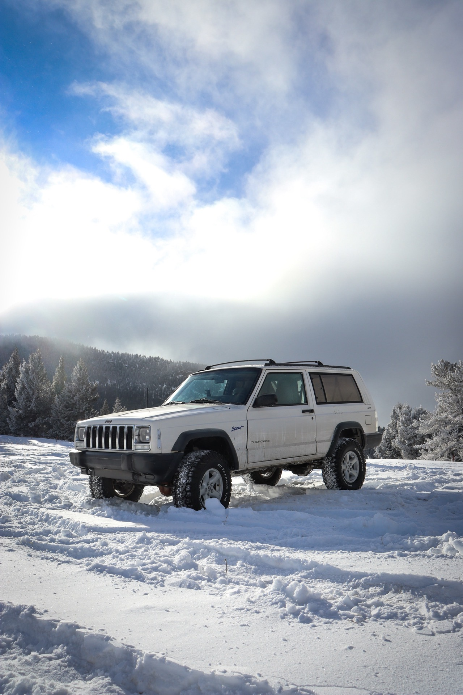
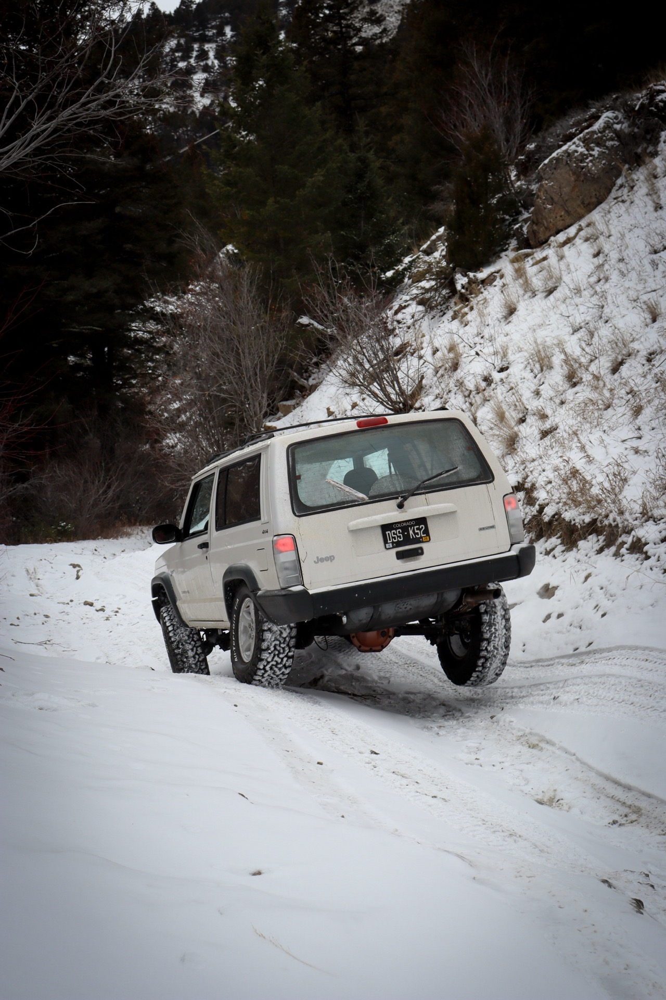
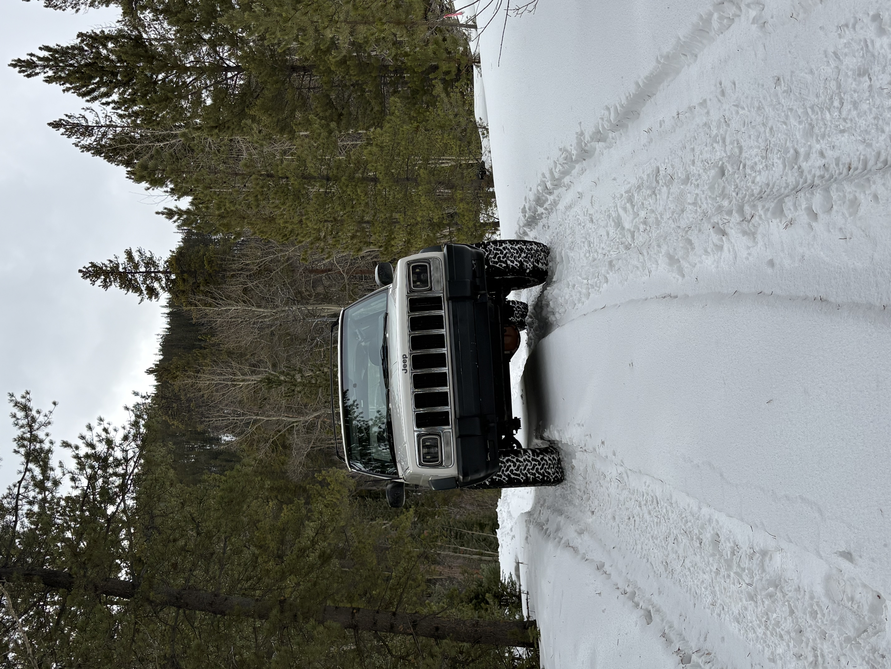
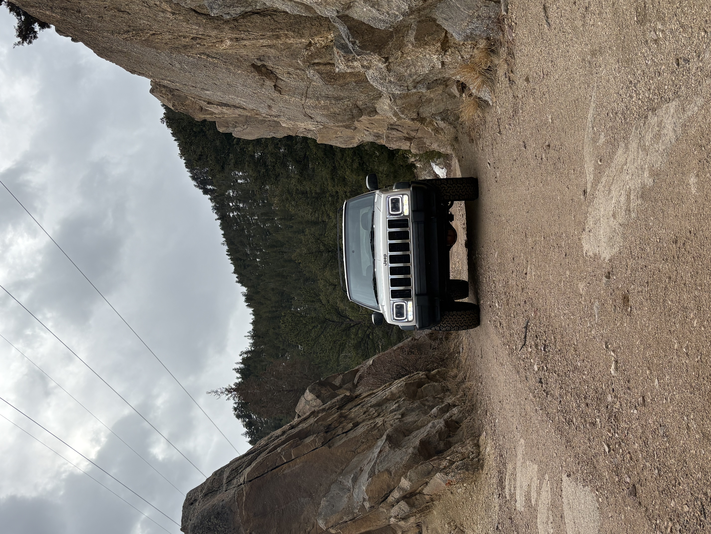

Trails I've Run
Flathead Pass


Reveiw
Flathead Pass is a fun, approachable trail that’s especially enjoyable for snow wheeling. The route is generally easy and well-suited for a wide range of vehicles, making it a solid choice for beginners or anyone looking for a relaxed winter run without getting too technical. In snowy conditions, the trail offers good articulation opportunities, with uneven sections that keep things interesting without being overly challenging. That said, it can get icy in spots, particularly in shaded areas or after temperature swings, so good tires and basic winter preparedness are important. Overall, most vehicles should be able to make it through without trouble, especially with cautious driving and a bit of momentum where needed. Flathead Pass is a great option if you’re looking for scenic winter wheeling that’s more about fun and exploration than hardcore obstacles.
Bard Creek Road


Reveiw
Bard Creek Road is an easy, laid-back trail with limited obstacles, making it accessible for most vehicles and drivers. The road is straightforward overall, with nothing too technical, which makes it a good option for a casual trail ride or a short day trip. One of the highlights of the trail is the old mine along the route, which adds some interesting history and makes for a cool spot to stop and explore or take photos. When snow is present, it adds an extra layer of fun to the drive, giving the trail a bit more character without significantly increasing the difficulty. Even with snow, Bard Creek Road remains pretty easy and manageable. It’s a solid choice if you’re looking for a relaxed trail with some scenery and a unique feature without committing to anything challenging.South Meadow Creek Lake


Reveiw
South Meadow Creek Trail in Montana is a fun but challenging drive if you are headed all the way to the lake at the top. The trail starts out fairly smooth and easy to follow. As you climb higher the road gets noticeably rougher. The rocks become larger and more frequent and the ruts get deeper. The last section before the lake is especially rocky and narrow and can make for a slow crawl. Depending on the season the upper part of the trail can also get icy and slick, especially in shaded areas and near water crossings. When the ice combines with loose rock it becomes harder to control wheel spin and line choice matters. Lower clearance vehicles may struggle on this trail. A lift and good off road tires make a big difference when climbing over larger rocks and dealing with the uneven surface. Without them you risk scraping your undercarriage and sliding on icy patches. Even with the difficulties the trail rewards you with great views and a peaceful mountain lake at the top. It is worth the trip if you are prepared for rough conditions and changing weather. Bring recovery gear and take your time on the upper sections.
Red Elephant Hill


Reveiw
Red Elephant Hill is a classic Colorado trail known for its steep climb and technical terrain. The first part of the trail is a steady ascent through tight switchbacks and loose rock. As you climb higher the road becomes far more uneven with deep ruts carved by runoff and past traffic. Some of these ruts force you into off-camber lines where good articulation really matters to keep all four tires planted. There are a few sections where the ruts are so deep that open differentials can lead to tire lift and loss of traction. A locker, even just in the rear, can be very helpful in walking up these obstacles without excessive wheel spin. Drivers without lockers will need careful spotting and momentum to make it through. While the trail is not the longest, the steady grade and technical features make it a workout for both driver and vehicle. Skid plates and rock sliders are good insurance as the larger rocks and ledges can sneak up on you. When you reach the top you’re rewarded with sweeping views and a feeling of accomplishment after conquering the hill. Red Elephant Hill is a great choice for experienced drivers looking for a challenge, but it demands preparation and respect for the terrain.
Argentine Pass


Reweiw
Argentine Pass is a scenic high alpine trail with a mix of mild technical terrain and beautiful views. The approach winds through forest and open meadows before climbing above tree line. Along the way there are several water crossings. Most are shallow in late summer, but early in the season they can run deeper and faster from snowmelt. Checking depth beforehand is smart. The trail surface is mostly dirt and loose rock, but there are a few rocky sections that require careful tire placement. These obstacles are not overly difficult, and most high clearance 4x4s can handle them with a patient line. Compared to other nearby trails, Argentine Pass is overall pretty easy and a good choice for drivers newer to Colorado high mountain roads. Near the top the air thins and the views become wide and dramatic. The pass tops out over 13,000 feet and the exposure brings strong winds and quick weather changes. Even though the technical difficulty is moderate, being prepared for mountain conditions is important. Argentine Pass offers a relaxed but engaging drive with just enough challenge to make it interesting. The combination of historic mining remnants, water crossings, and high elevation scenery make it a rewarding trail for those looking to explore Colorado’s alpine terrain without extreme obstacles.
Barbour Fork


Reveiw
Barbour Fork is a relatively easy trail that offers a relaxed drive through thick forest and open clearings. For most of the route the road surface is mild with small rocks, packed dirt, and only light ruts. It is suitable for most stock high clearance 4x4s and is a good trail for beginners. As you near the top, though, the character changes. The terrain becomes more difficult with larger rock gardens and uneven ledges. These obstacles require careful line choices to avoid scraping or getting hung up. Good tire placement and slow steady throttle make a big difference here. Vehicles with better clearance and suspension travel will have an easier time in this section, but a patient approach can get most rigs through. Even with the rough spots near the end, Barbour Fork remains a fun and approachable trail. The combination of mild forest road driving and engaging technical features near the top makes it a good choice for a half day outing close to town. Take your time on the rock gardens and enjoy the views from the higher sections.